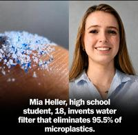
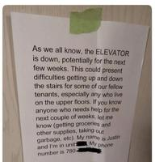

0
0


Microsoft is turning Azure Linux into a general-purpose, Fedora-based cloud distribution available to all Azure customers, while also productizing Flatcar as Azure Container Linux for immutable container hosts. "When Microsoft joined the Linux Foundation, there was this big conspiracy theory that somehow the Linux Foundation was undermining open source in partnership with Microsoft, and now you announce that you're shipping a Linux distribution," Jim Zemlin, the Linux Foundation's CEO, said in response to Microsoft's surprise announcement. "That's amazing." ZDNet reports: Until now, [Lachlan Everson, Microsoft's Principal Program Manager on Azure's open-source team] noted, "we had Azure Linux only available to third-party customers through AKS specifically, and that was Azure Linux 3.0." Going forward, this will be ACL. Everson emphasized that Azure Linux 4.0 is the culmination of years of internal usage and the evolution of the earlier Mariner distribution. "So we've been running Azure Linux for many years internally, and we got through to 3.0, and we only allowed it on as a container host on AKS. What we've done is make it a general-purpose, so this is all the learnings that we've had in the heritage of Mariner."
Under the hood, Azure Linux 4.0 is based on Fedora Linux and is delivered as an open distribution on GitHub. This code is available now. Yes, Red Hat knows that Microsoft has done this. Everson continued, "So, we made a decision to use Fedora as an upstream, so it's using RPMs in the Fedora ecosystem. Microsoft curates the packages and the supply chain to fit Azure's cloud platform." Microsoft also created "it to be purpose-built for Azure, which integrates vertically into all of our infrastructure to give you the best Azure Linux experience on Azure." While Azure Linux will ship as a VM image, Microsoft is already preparing a developer-friendly path onto Windows desktops: "And as of today, we have it as a VM image for your VM host on Azure. We're going to announce WSL images as well."
While developers will be able to run Azure Linux locally through WSL, Microsoft is not positioning it as a traditional desktop Linux. Asked whether he could run it on his laptop, Everson said: "I will be able to run it on my laptop, or what have you. Yes, on Windows 11." However, when pressed about a desktop experience, Everson was clear that there are "no plans" for a graphical environment. "It's optimized for server-side in the cloud," he said, adding that even on a developer machine, users should expect a lean environment. "Minimal packages, yeah. The idea is that we offer you a consistent experience to do your development on your machine, and that you can take your workloads as you develop them on your machine and run them with VS Code. You can run your applications on that, and know that the platform is the same that you're running on the cloud, so that you have that kind of consistency between environments."
Flatcar itself remains the upstream project, but Microsoft is packaging it for Azure customers. Everson described Flatcar as "purpose-built, immutable, secure by default, production-ready operating system, and Azure Container Linux is the productization of that, but we're still investing in the upstream Flatcar ecosystem and pulling that downstream into a productized exterior experience just for container workloads, so it's a container hosting in AKS." To underscore the immutable model, he added that "Everything's baked in, so there is no package manager. We bake the bits into the immutable, and they're in the immutable version. So Azure Container Linux is the immutable version. So you shouldn't be changing any system packages or any application packages. Anything that you need to change is customer workloads run in containers."
Read more of this story at Slashdot.
An anonymous reader quotes a report from the New York Times: Meta told employees on Monday that it was reassigning 7,000 workers to focus on new initiatives around artificial intelligence, the latest change in a company transformation spurred by the powerful technology. Employees will be moved to four new organizations focused on building new A.I. tools and apps, Janelle Gale, Meta's head of human resources, said in an internal memo. The organizations will use "A.I. native design structures" and have fewer managers per employee than other parts of the company, she said, adding that company leaders will send details about the new roles on Wednesday. The restructuring "will make us more productive and make the work more rewarding," Ms. Gale wrote. Meta declined to comment further on the changes.
The move comes shortly before Meta begins laying off roughly 8,000 employees, or 10 percent of its work force. Ms. Gale also mentioned Wednesday's layoffs in her memo. "We know days like this are extremely hard, and we appreciate you showing up for each other," Ms. Gale said.
According to the NYT, employees have been asked to work remotely that day and emails about the layoffs would be sent at 4 a.m. local time. Employees in the United States will receive 16 weeks of severance pay, along with two extra weeks for every year they worked at Meta.
Read more of this story at Slashdot.
Amazon is adding AI-generated "podcasts" to Alexa+, letting users request custom audio explainers on any topic featuring two synthetic co-hosts. Variety reports: Seemingly to dispel the notion that these "podcasts" will be AI audio slop, Amazon emphasized that it has deals with major news organizations to ensure "accurate, real-time news and information." Those include the Associated Press, Reuters, the Washington Post, Time magazine, Forbes, Business Insider, Politico and USA Today; publications from Conde Nast, Hearst and Vox Media; and more than 200 local newspapers across the U.S.
In an example clip shared by Amazon of the new Alexa Podcasts feature, the two AI-generated hosts discuss "the latest music releases." A male Alexa+ narrator says more than 50% of music listening now comes from unsigned artists. "The monoculture is just gone," a female-voiced Alexa+ narrator chimes in. The male Alexa+ host says there has been "stoner metal," indie pop and experimental hip-hop music "all dropping on the same Friday," and adds, "That's not chaos -- that's the healthiest the music ecosystem has ever been."
[...] To use Alexa Podcasts, users can simply tell Alexa what topic they're curious about and "it does the rest in minutes." Alexa+ will provide an overview of what it plans to cover, and let you adjust the length and direction before it generates the podcast. When your episode is ready, you'll get a notification on your Echo Show device and the Alexa app.
Read more of this story at Slashdot.
A researcher known as Chaotic Eclipse has released a proof-of-concept exploit for a new Windows zero-day dubbed MiniPlasma, which BleepingComputer confirmed can grant SYSTEM privileges on fully patched Windows 11 systems. The researcher claims the bug is effectively a still-exploitable version of a 2020 flaw Microsoft said it had fixed. From the report: At the time, the flaw was assigned the CVE-2020-17103 identifier and reportedly fixed in December 2020. "After investigating, it turns out the exact same issue that was reported to Microsoft by Google project zero is actually still present, unpatched," explains Chaotic Eclipse. "I'm unsure if Microsoft just never patched the issue or the patch was silently rolled back at some point for unknown reasons. The original PoC by Google worked without any changes."
BleepingComputer tested the exploit on a fully patched Windows 11 Pro system running the latest May 2026 Patch Tuesday updates. In our test, we used a standard user account, and after running the exploit, it opened a command prompt with SYSTEM privileges, as shown in the image [here]. Will Dormann, principal vulnerability analyst at Tharros, also confirmed the exploit works in his tests on the latest public version of Windows 11. However, he said that the flaw does not work in the latest Windows 11 Insider Preview Canary build.
The exploit appears to abuse how the Windows Cloud Filter driver handles registry key creation through an undocumented CfAbortHydration API. Forshaw's original report said that the flaw could allow arbitrary registry keys to be created in the .DEFAULT user hive without proper access checks, potentially enabling privilege escalation. While Microsoft reports having fixed the bug as part of its December 2020 Microsoft Patch Tuesday, Chaotic Eclipse now claims the vulnerability can still be exploited.
Read more of this story at Slashdot.
Nintendo is trying to secure a touchscreen-specific monster-catching patent that could be relevant to Palworld Mobile. Japan's patent office has initially rejected the application for lacking an inventive step over prior art, but the company could appeal or amend the claims. Games Fray reports: The Japan Patent Office (JPO) has now made a new monster-catching patent application by Nintendo public. Patent Application No. 2026-019762 covers monster-catching of the kind already asserted against the PC and console versions of Palworld and is from the same patent family as two of the three patents Nintendo is already asserting against Palworld, but with a touchscreen focus. Potential targets are the upcoming Palworld Mobile game and Tencent's Roco Kingdom: World, which is presently available only in China but likely to expand internationally. Nintendo filed the application this year with a request for a fast-tracked review. The JPO has indeed been quick, and the response is that Nintendo's application lacks an inventive step over the prior art.
Nintendo already amended the claims in February and can try to amend them again. It can try to persuade the examiner and potentially appeal the decision. But the initial rejection suggests that Nintendo will not obtain the desired touchscreen monster-catching patent quickly. The rejection was communicated on April 24, 2026. Nintendo could abandon the application now, but Nintendo being Nintendo, they are more likely to try to persuade the examiner to arrive at a different conclusion, even though the reasons for the rejection are strong. In many patent examination processes, the initial rejection is essentially just an invitation to present one's best arguments. Here, however, the rejection notice is so well-reasoned that it will be an uphill battle for Nintendo. Nintendo's application would cover a touchscreen-controlled game in which a player moves through "a field in a virtual space," uses "a capture item for capturing a field character," and can summon "a battle character" to fight that creature. During combat, the game would display "a plurality of commands including at least an attack command and an item command," selected through "an operation input using the touch panel."
The key claim is that when the capture item is used "during a battle" or "in a non-battle state," the game performs "a capture success determination," and, if successful, "the field character is captured and set to a state owned by the player."
Read more of this story at Slashdot.
Meta is expected to begin cutting about 8,000 jobs this week as it pours more money into AI infrastructure and looks to "offset" other investments, with additional layoffs reportedly possible later this year. According to CNBC, the morale has worsened inside the company. "Internally, there's an emerging sense of dread across wide swaths of the company," the report says, citing current and former Meta employees. "That's in part because more cuts are expected this year, including a potential round of layoffs in August, followed by another round later in the year, some of the sources said." From the report: [...] Whatever anxiety investors are experiencing, the feelings inside the company are more intense, with some longtime staffers questioning Meta's AI pursuits under AI chief Alexandr Wang, while also weighing if now is the time to leave for opportunities at other companies in the AI race, according to current and former employees. Data aggregated by Blind, an anonymous professional network that requires users to verify their employment with a work email address, reveals some of the internal malaise. Meta's overall rating by employees on Blind has declined 25% from a peak in the second quarter of 2024 to the current period, with a 39% drop in its culture rating. In every category other than compensation, Meta has seen a ratings decline and dramatically underperforms rivals Amazon, Google and Netflix, the Blind data reveals.
The company's full-court press with AI included the recent debut of an employee tracking tool intended to collect data from staffers' actions, such as mouse movements and keystrokes on their work computers. The Model Capability Initiative, or MCI, as it's called, is part of Meta's efforts to train AI models to power digital agents that can perform various coding and white-collar tasks. Employees have characterized the data tracking tool as "dystopian," according to messages viewed by CNBC, with some workers expressing fear that personal information could be leaked. Some Meta workers have noted that their workplace computers appear slower since the company initiated the project, adding to their frustration, sources said.
Meta workers responded by creating an online petition that urges Zuckerberg and leadership to shutter the project. "Collecting and repurposing this kind of data raises serious concerns around privacy, consent, and trust in the workplace," the petition says. "It should not be the norm that companies of any size are permitted to exploit their employees by nonconsensually extracting their data for the purposes of AI training." Further reading: NYT: 'Meta's Embrace of AI Is Making Its Employees Miserable'
Read more of this story at Slashdot.
After three weeks of testimony, which was covered extensively here on Slashdot, a U.S. jury on Monday ruled against Elon Musk in his lawsuit against OpenAI, finding that he waited too long to bring his claims that the company betrayed its nonprofit mission. Reuters reports: The trial had widely been seen as a critical moment for the future of OpenAI and artificial intelligence generally, both in how it should be used and who should benefit from it. Following the verdict, Musk's lawyer said he reserved the right to appeal, but the judge suggested he may have an uphill battle because whether the statute of limitations ran out before Musk sued was a factual issue. "There's a substantial amount of evidence to support the jury's finding, which is why I was prepared to dismiss on the spot," U.S. District Judge Yvonne Gonzalez Rogers said.
In his 2024 lawsuit, Musk accused OpenAI, its Chief Executive Sam Altman and its President Greg Brockman of manipulating him into giving $38 million, then going behind his back by attaching a for-profit business to its original nonprofit and accepting tens of billions of dollars from Microsoft and other investors. Musk called the OpenAI defendants' conduct "stealing a charity." OpenAI was founded by Altman, Musk and several others in 2015. Musk left its board in 2018, and OpenAI set up a for-profit business the next year. OpenAI countered that it was Musk who saw dollar signs, and that he waited too long to claim OpenAI breached its founding agreement to build safe artificial intelligence to benefit humanity. "Mr. Musk may have the Midas touch in some areas, but not in AI," William Savitt, a lawyer for OpenAI, said in his closing argument.
The verdict followed 11 days of testimony and arguments where Musk's and Altman's credibility came under repeated attack. Lawyers for OpenAI embraced each other after the verdict was announced. Microsoft faced an aiding and abetting claim. In a statement, a Microsoft spokesperson said, "The facts and the timeline in this case have long been clear and we welcome the jury's decision to dismiss these claims as untimely."
Recap:
Musk Accused of 'Selective Amnesia', Altman of Lying As OpenAI Trial Nears End (Day Twelve)
OpenAI Trial Wraps Up With 'Jackass' Trophy For Challenging Musk (Day Eleven)
Sam Altman Testifies That Elon Musk Wanted Control of OpenAI (Day Ten)
Microsoft CEO Satya Nadella Testifies In OpenAI Trial (Day Nine)
Sam Altman Had a Bad Day In Court (Day Eight)
Sam Altman's Management Style Comes Under the Microscope At OpenAI Trial (Day Seven)
Brockman Rebuts Musk's Take On Startup's History, Recounts Secret Work For Tesla (Day Six)
OpenAI President Discloses His Stake In the Company Is Worth $30 Billion (Day Five)
Musk Concludes Testimony At OpenAI Trial (Day Four)
Elon Musk Says OpenAI Betrayed Him, Clashes With Company's Attorney (Day Three)
Musk Testifies OpenAI Was Created As Nonprofit To Counter Google (Day Two)
Elon Musk and OpenAI CEO Sam Altman Head To Court (Day One)
Read more of this story at Slashdot.
An anonymous reader quotes a report from the Wall Street Journal: Going back to grad school has long been the Plan B of young professionals who aspire to climb higher in their careers or struggle to get promoted in a tough job market. New data show that getting a master's degree isn't the guarantee it used to be. The unemployment rate for workers under 35 with a master's degree has rarely been higher in the past 20 years, according to the Burning Glass Institute, a labor-market think tank focused on the future of work, which analyzed data collected by the U.S. Bureau of Labor Statistics going back to 2003.
At the same time, the unemployment rate for workers under 35 with a Ph.D., law degree or medical degree has rarely been lower. "For most of the past two decades, these lines moved together -- not anymore," said Gad Levanon, chief economist of Burning Glass. Levanon has a theory about why the payoffs for advanced degrees have uncoupled: "More degrees chasing fewer of the positions those degrees were meant to unlock." [...] While degrees from law school and medical school amount to a license to practice, master's degrees are more of a signal, Levanon said. And a signal loses value when so many people have one, he added: "It's hardly a sure bet to securing a good job."
Now master's-degree holders under 35 are at the 77th percentile of unemployment, where the 50th percentile is normal, according to the Burning Glass analysis. Even associate-degree holders have had a higher employment level for the past year. Unemployment among master's-degree holders has been worse only about a quarter of the time in the past 20-plus years. There was a stint during the Covid-19 pandemic when this cohort was out of work at higher rates, and a more prolonged stretch as the U.S. climbed out of the recession in 2008 and 2009. "Every indication is hiring managers now are more receptive than ever to the idea that a person doesn't need a graduate degree to be competitive," said Johnny C. Taylor Jr., president of SHRM, the chief lobbying group for human-resource professionals.
"We are seeing that, hands down, especially in the last two or three years with AI," he said of job readiness. Employers just want to know, "Can you do it?"
Read more of this story at Slashdot.
The London-headquartered lender Standard Chartered announced plans to cut more than 7,000 jobs by 2030, with CEO Bill Winters saying the bank will replace some "lower-value human capital" through automation and AI while offering retraining to affected workers. "It's not cost-cutting. It's replacing in some cases lower-value human capital with the financial capital and the investment capital we're putting in," CEO Bill Winters told reporters. "So, the people that want to reskill, that want to carry on, we're giving every opportunity to reposition," Winters said. Reuters reports: The cuts, alongside higher shareholder return targets announced in a strategy update, come as StanChart is at the tail-end of a decade-long effort to transform itself from a potential takeover target to a steadily profitable lender. Its London-listed shares, which have risen 65% in the last 12 months, fell 0.5% in early trading, as analysts said the new targets were at the conservative end of their expectations.
"In a world full of uncertainty, performance may prove more challenging further out," said Ed Firth, analyst at Keefe, Bruyette & Woods, citing how the bank has benefited in recent years from high interest rates and huge wealth flows. StanChart's move to streamline operations and rein in costs comes as more global firms slash jobs by deploying AI to improve efficiency. Japanese lender Mizuho in March unveiled up to 5,000 job cuts over a decade. And banks globally are scrambling to integrate frontier AI models and fend off rising cyber threats.
The most affected roles will be in the bank's back-office centres, including those in Chennai, Bengaluru, Kuala Lumpur and Warsaw, according to Winters. "Of course we're using AI along the way and AI will be a huge facilitator and enabler of that," he added, referring to its ongoing revamp to automate more of its core banking system. StanChart said it would deliver over 15% return on tangible equity in 2028, more than three percentage points higher than in 2025, and building to about 18% in 2030. Meta also announced plans to reassign 7,000 employees into AI-related initiatives, just ahead of layoffs expected to affect roughly 8,000 workers.
Read more of this story at Slashdot.
An anonymous reader quotes a report from KrebsOnSecurity: Until this past weekend, a contractor for the Cybersecurity & Infrastructure Security Agency (CISA) maintained a public GitHub repository that exposed credentials to several highly privileged AWS GovCloud accounts and a large number of internal CISA systems. Security experts said the public archive included files detailing how CISA builds, tests and deploys software internally, and that it represents one of the most egregious government data leaks in recent history. On May 15, KrebsOnSecurity heard from Guillaume Valadon, a researcher with the security firm GitGuardian. Valadon's company constantly scans public code repositories at GitHub and elsewhere for exposed secrets, automatically alerting the offending accounts of any apparent sensitive data exposures. Valadon said he reached out because the owner in this case wasn't responding and the information exposed was highly sensitive.
The GitHub repository that Valadon flagged was named "Private-CISA," and it harbored a vast number of internal CISA/DHS credentials and files, including cloud keys, tokens, plaintext passwords, logs and other sensitive CISA assets. Valadon said the exposed CISA credentials represent a textbook example of poor security hygiene, noting that the commit logs in the offending GitHub account show that the CISA administrator disabled the default setting in GitHub that blocks users from publishing SSH keys or other secrets in public code repositories. "Passwords stored in plain text in a csv, backups in git, explicit commands to disable GitHub secrets detection feature," Valadon wrote in an email. "I honestly believed that it was all fake before analyzing the content deeper. This is indeed the worst leak that I've witnessed in my career. It is obviously an individual's mistake, but I believe that it might reveal internal practices." "Currently, there is no indication that any sensitive data was compromised as a result of this incident," a CISA spokesperson wrote. "While we hold our team members to the highest standards of integrity and operational awareness, we are working to ensure additional safeguards are implemented to prevent future occurrences."
The GitHub account in question was taken offline shortly after CISA was notified about the exposure. However, according to Caturegli, the exposed AWS keys remained valid for another 48 hours.
"What I suspect happened is [the CISA contractor] was using this GitHub to synchronize files between a work laptop and a home computer, because he has regularly committed to this repo since November 2025," Caturegli said. "This would be an embarrassing leak for any company, but it's even more so in this case because it's CISA."
Read more of this story at Slashdot.
Europe is testing laser-based satellite communications through a new mountaintop ground station in Greece, aiming to deliver faster, more secure links than traditional radio systems as bandwidth demand grows. The Register reports: Lithuanian space and defense biz Astrolight says that it has commissioned a new optical ground station in Greece that will support ESA-backed CubeSat missions testing laser-based communications between satellites and Earth. The Holomondas Optical Ground Station was built through the PeakSat project, led by the Aristotle University of Thessaloniki with backing from the European Space Agency and Greece's Ministry of Digital Governance. Its job is to receive data from satellites via infrared laser links rather than the radio systems that space operators have relied on for decades.
PeakSat and ERMIS-3, two Greek CubeSats launched in March under ESA's wider Greek IOD/IOV mission program, both carry Astrolight's ATLAS-1 optical communication terminal. Astrolight also built the ground segment, giving the project a fully integrated end-to-end optical communications setup. [...] The company says the station uses an 808-nanometer laser beacon and an optical C-band receiver capable of receiving data at up to 2.5 Gbps. Unlike traditional RF systems, optical links use tightly focused infrared beams that are harder to intercept or jam while also supporting significantly higher throughput.
Read more of this story at Slashdot.
An anonymous reader quotes a report from The Verge: Sony reportedly won't release its major single-player PlayStation games on PC anymore. According to Bloomberg's Jason Schreier, Hermen Hulst, who heads up PlayStation's studios business, informed employees in a town hall on Monday about the change in strategy. Schreier had previously reported on the shift in March, saying that Sony scrapped plans to launch PC versions of last year's Ghost of Ytei and "other internally developed games." Online games will still come to multiple platforms following this change in strategy, Schreier reported at the time.
In recent years, Sony has released many of its biggest games on PC, including Spider-Man 2, Ghost of Tsushima, both The Last of Us games, Horizon Zero Dawn Remastered, and multiplayer titles like Helldivers 2 and Marathon. Two years ago, Hulst committed to releasing PlayStation's live-service games "day and date" on PC and PS5, but its single-player PC releases have been less consistent, with Hulst saying that the company takes a "more strategic approach." In April, Microsoft's new Xbox chief Asha Sharma said the company is "reevaluating" exclusive games for the platform. "Players are frustrated," she wrote in a memo. "New feature drops on console have been less frequent. Our presence on PC isn't strong enough. Pricing is getting harder for people to keep up with. And core experiences like search, discovery, social, and personalization still feel too fragmented."
"The model that got us here won't be the one that takes us forward," the memo adds.
Read more of this story at Slashdot.
Microsoft is testing long-requested Windows 11 customization options, including a resizable taskbar, smaller taskbar buttons, and a more configurable Start menu that lets users reduce recommended content. BleepingComputer reports: Starting with Windows 11 Insider Preview Build 26300.8493, the taskbar can now be configured to use smaller buttons and moved to the bottom, top, left, or right side of the screen. "The ability to move the taskbar to the top or sides of the screen has been one of the most requested features, and we are bringing it to Windows 11," said Diego Baca, partner director of Microsoft Design. "With this update, when small taskbar is enabled, you get smaller icons, a shorter taskbar, and more vertical space for your apps (see video below). No restart or sign-out is required."
[...] Microsoft is also rolling out changes to give Windows users more control over the Start menu, allowing them to toggle off recommended content and customize its size. "These controls are designed to work together. If you want a Start menu with just your pinned apps, you can turn off Recommended and All," Boca added. "If you want a full Start that shows everything, you can leave it all on. The goal is simple: it is your choice, and it should be easy to make." However, Microsoft will maintain a list of recently installed apps, as it is a key way for users to discover new applications alongside the Microsoft Store.
Furthermore, Microsoft is improving file relevance by adjusting how files are displayed and ordered to prioritize the most relevant items, and will also allow users to hide their name and profile picture from the Start menu. [...] In addition to taskbar and Start menu improvements, the company plans to reduce notifications, simplify Windows settings, and ensure that device setup on new Windows PCs requires fewer reboots. Microsoft is also working on improving Windows search, aiming for a more consistent experience across the Start menu, taskbar, File Explorer, and Settings.
Read more of this story at Slashdot.
Microsoft is launching three new Intel-powered Surface devices for businesses: the Surface Pro 12, Surface Laptop 8, and a smaller 13-inch Surface Laptop model. These new machines come equipped with newer Intel chips, a few business-focused upgrades, and notably higher starting prices. "The high pricing of these three new Surface devices is a sign of things to come for whatever consumer models Microsoft is planning this year," notes The Verge. From the report: This time around Microsoft is refreshing its Surface Pro and Surface Laptop models with Intel's latest Core Ultra Series 3 processors first, ahead of similar models with Qualcomm's new Snapdragon X2 processors later this year. The new Surface Pro 12, or as Microsoft calls it the Surface Pro for Business 13-inch (12th Edition), will be available for businesses today, starting at an eye-watering $1,949.99. The base model will include an Intel Core Ultra 5 processor, 16GB of RAM, 256GB of storage, and the regular 13-inch PixelSense LCD display.
Businesses will have to pay extra for models with Intel's Core Ultra 7 processor, up to 64GB of RAM, and up to 1TB of storage. The top spec Surface Pro 12 with a Core Ultra 7, 64GB of RAM, and 1TB of storage will be priced at $4,399.99, and there are also OLED screen options and models with 5G connectivity. The Surface Pro 12 5G starts at $2,249.99, with a Core Ultra 5, 16GB of RAM, and 256GB of storage. [...] Microsoft is also launching two new versions of the Surface Laptop for businesses today. The Surface Laptop 8, or Surface Laptop for Business 13.8 or 15-inch (8th Edition) as Microsoft calls it, will also be available with a range of Intel's Core Ultra Series 3 chips. It launches alongside a smaller 13-inch model, which is confusingly labeled the Surface Laptop for Business 13-inch (1st Edition).
The 13.8-inch model starts at $1,949.99, and includes Intel's Core Ultra 5 processor, 16GB of RAM, and 256GB of storage. While Surface devices for businesses have typically had higher pricing than consumer models, the $1,949.99 starting price for a Surface Laptop 8 is almost double the original price of the Surface Laptop 7. RAMageddon really has come for Microsoft's Surface Pro and Surface Laptop devices, after recent price increases meant the existing consumer models are now $500 more expensive than their original starting price. The max configuration for the 13.8-inch Surface Pro 8 will include a Core Ultra 7, 64GB of RAM, and 1TB of storage for $4,299.99. A similar version of the 15-inch model (with an x7 processor) will be priced at $4,499.99.
Read more of this story at Slashdot.
The FBI is seeking up to $36 million for nationwide access to automated license plate reader (ALPRs) data, which could let it query vehicle movements across the U.S. and its territories through a commercial database. 404 Media reports: "The FBI has a crucial need for accessible LPRs to provide a diverse and reliable range of collections across the United States. This data should be available across major highways and in an array of locations for maximum usefulness to law enforcement," a statement of work, which describes what data the FBI is seeking access to, reads. ALPR cameras generally work by constantly scanning the color, brand, model, and license plate of vehicles that drive by. This creates a timestamped record of where a particular vehicle was at a specific time that law enforcement can then query, effectively letting them see exactly where someone drove across time. The technology has existed for decades, but has become more pervasive in recent years.
The FBI says it is looking for a vendor that will let it log into a Software-as-a-Service system and then query the collected ALPR data with license plate information, a description of the vehicle, a time or date, and geolocation information. The FBI says it is looking for ALPR coverage in the following areas: Eastern 48 (East of the Mississippi River); Western 48 (West of the Mississippi River); Hawaii; Puerto Rico; Alaska; and outlying areas such as Guam, the U.S. Virgin Islands, or Tribal Territories. In effect, the FBI is looking for ALPR data nationwide and even beyond. An attached price template indicates the FBI is willing to pay $6 million for each of those broad areas, bringing the total to $36 million.
The FBI says it intends to award the contract to a single vendor, but if any such vendor is unable to fulfill all of the requirements, the agency may award the contract to up to two vendors. The contract is specifically for the FBI's Directorate of Intelligence, which oversees the agency's intelligence mission. The FBI is not only a law enforcement agency, but also part of the Intelligence Community. The report notes that the contract appears aimed at vendors like Flock or Motorola Solutions, since they're some of the only companies able to provide the sort of data the FBI is seeking.
Further reading: Small Town Fights Over Flock's AI-Enhanced Network of License Plate-Reading Cameras
Read more of this story at Slashdot.
Meir Orbach / CTech : Ocean, which uses AI agents to detect email attacks, raised a $20M Series A led by Lightspeed, following an $8M seed in 2024 — The cybersecurity startup says its platform replaces legacy phishing defenses with AI agents that analyze intent, not just patterns.
Charles Rollet / Business Insider : Sundar Pichai announced at Google I/O that Gemini 3.5 Pro will launch next month; attendees groaned at the model coming out later than they expected — - Google CEO Sundar Pichai announced that Gemini 3.5 Pro will launch next month. — Google I/O 2026 attendees groaned at the model coming out later than they'd expected.
Wired : Hands-on with Google and Samsung's Android XR smart glasses from Warby Parker and Gentle Monster, and with XReal's Project Aura, all set to arrive this fall — Here's your first look at smart glasses coming from Warby Parker and Gentle Monster, powered by Google and Samsung's XR platform.
Aisha Malik / TechCrunch : Google unveils Universal Cart, a shopping assistant that works “across merchants”, built on the Universal Commerce Protocol, rolling out in the US today — At I/O on Tuesday, Google introduced Universal Cart, its so-called agentic hub for managing shopping in one place.
Jen Judson / Bloomberg : At a hearing, two of three judges of a federal appeals court appeared skeptical of Anthropic's bid to block the DOD from designating it a supply-chain risk — A federal appeals court appeared skeptical of Anthropic's bid to block the Pentagon from declaring that the company poses …
Will Knight / Wired : Demis Hassabis says companies looking to replace developers with AI may be due to a “lack of imagination and a lack of understanding” of the future — The CEO of Google DeepMind tells WIRED that companies should use the productivity gains of AI to do more, not lay people off.
Sarah Perez / TechCrunch : Google's web-based AI Studio now lets users build native Android apps; Google says the apps are for personal use only for now and publishing is on the roadmap — The AI coding boom is now coming directly for Android app development. On Tuesday, Google announced new native Android app creation capabilities …
Ivan Mehta / TechCrunch : Google introduces Antigravity 2.0, featuring an updated desktop app that lets users orchestrate multiple agents, alongside an Antigravity CLI tool and SDK — Google is introducing a new version of its agentic coding app, Google Antigravity 2.0, with an updated desktop app, a CLI tool, and an SDK for custom workflows.
Josh Woodward / The Keyword : Google says the Gemini app has 900M+ MAUs across 230 countries, up from 400M at I/O 2025, and launches Neural Expressive, a new design language for Gemini — Gemini is becoming a more helpful AI assistant, with an intuitive new UI, proactive daily briefs and Gemini Spark, an agent to help you get things done around the clock.
Jess Weatherbed / The Verge : OpenAI adds support for Google's SynthID watermarks in AI images, and previews a public portal to let users verify if an image was generated by OpenAI's tools — Images generated by ChatGPT will now carry Google's SynthID watermarks. … OpenAI is announcing updates today that aim …
Damien Wilde / 9to5Google : Google teases Android Halo, which makes an AI agent's status visible via “subtle communication” at the top of the phone screen, coming later this year — At Google IO, we were given a tease of an upcoming “Android Halo” feature that, at least on first glance, isn't clear how or what it will do.
Hayden Field / The Verge : Google says it is expanding access to CodeMender, an “AI agent for code security” it debuted in October, by inviting select groups of experts to test the API — The company is marketing its CodeMender tool as a way to “help secure the world's code bases.”
Carl Franzen / VentureBeat : Google launches the Gemini Omni multimodal model, saying it can “create anything from any input”, starting with video generation, for Google AI subscribers — Although it was already discovered by intrepid AI power users weeks ahead of the official unveiling today at Google's annual …
Mariella Moon / Engadget : Google announces Gemini Spark, a “24/7 personal AI agent” that is powered by Gemini 3.5 and supports integrations with Google Workspace apps, including Gmail — The AI agent is rolling out to testers this week. — Google has announced a “24/7 personal AI agent” …
Lance Whitney / ZDNET : Google restructures its AI plans, introducing a $100/month AI Ultra plan for developers and cutting the top-tier Ultra subscription from $250 to $200/month — ZDNET's key takeaways — Google has introduced a cheaper AI Ultra plan at $100 a month. — The full Ultra Plan is now $50 cheaper at $200 a month.